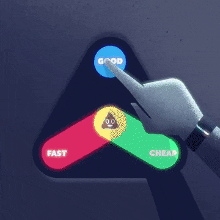

Често неосъзнати проблеми и решения
Вижте как третираме рак на viewray.com
Аналогията с мениджърския триъгълник е възможна
Проблеми
Коректност: бъгове
Производителност: бавности
Ефективност на разработка: некачествен код

Мета-проблеми

няма да се занимаваме с тях
Често имаме от всичко по малко
😞
Осъзнати проблеми
Имаме избор
Да ги решаваме

... което не винаги е възможно или практично
Да ги оставим съзнателно
Неосъзнати проблеми

But that's just, like, my opinion, man
Неволно копиране
class big_obj {
public:
big_obj();
big_obj(const big_obj&);
big_obj& operator=(const big_obj&);
big_obj(big_obj&&);
big_obj& operator=(big_obj&&);
private:
big_data m_data;
};
// ...
std::vector<big_obj> objects;
// ...
objects.push_back(std::move(new_object));
Какъв е проблемът тук?
std::vector използва std::move_if_noexcept
class big_obj {
public:
big_obj();
big_obj(const big_obj&);
big_obj& operator=(const big_obj&);
big_obj(big_obj&&) noexcept;
big_obj& operator=(big_obj&&) noexcept;
private:
big_data m_data;
};
// ...
std::vector<big_obj> objects;
// ...
objects.push_back(std::move(new_object));
Една история със std::function
struct simple_struct {
std::function<void(int)> func;
std::vector<int> data; // call func with each element in data
};
//...
std::vector stuffs; - Дотук всичко си работи
- Дебъгвам си нещо несвързано и изведнъж съм във
vector::vector(const vector&)
😲
std::function

- До C++20 не е задължително noexcept-move
- Small-function optimization
- Без алокации за малки функции
- Move трябва да премести и всички captures
- ... които може да не са noexcept-move
- В нови версии на libc++ и libstdc++ работи и със C++11
- Ползваме буфера, само ако можем да местим с noexcept
- Демо
ufunction
auto pfoo = std::make_unique<foo>
itlib::ufunction<void()> func = [p = std::move(pfoo)]() mutable {
// ...
consumer.consume(std::move(pfoo));
}
push_task(func)
Според мен в почти всички случаи std::function
може да бъде заменена с ufunction
small_vector
std::array
std::static_vector
pod_vector
flat_map, flat_set
span, memory_view
sentry
mscharconv
cpm
Край
Въпроси?
Борислав Станимиров / ibob.github.io / @stanimirovb
Тези слайдове: ibob.github.io/slides/unrealized-alpha/
Лиценз на слайдовете Creative Commons By 4.0